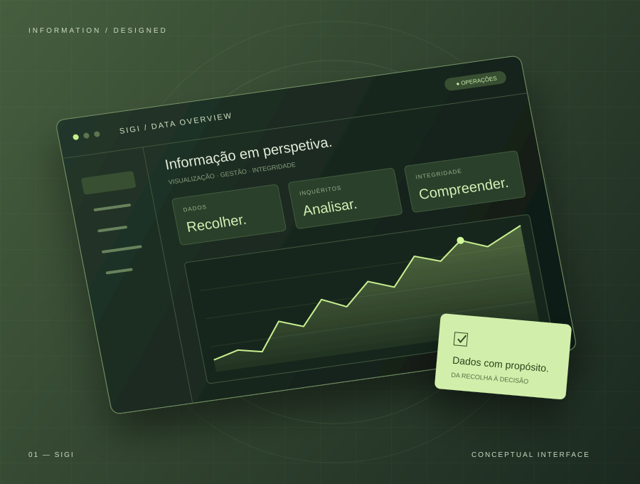
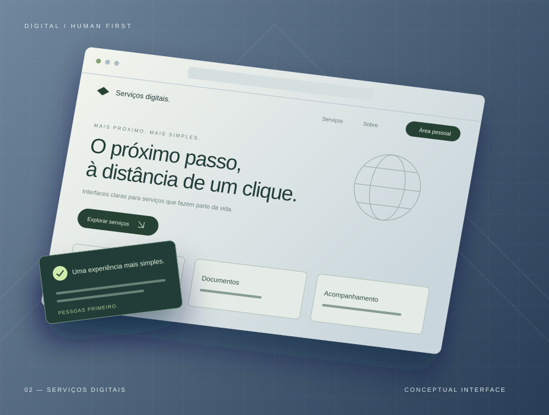
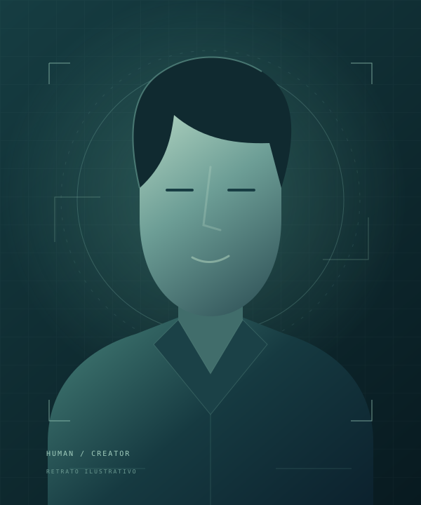

ILUSTRAÇÃO CONCEPTUALDados com propósito.
Desenvolvimento e otimização de aplicações SIGI para visualizar e gerir dados estatísticos de grande escala.
Tudo começa com uma ideia. Esta é a minha.
Transformo ideias em interfaces que fazem sentido.
Com curiosidade, propósito e umas boas linhas de código.
const criar = (ideia) => { return { pessoas: 'primeiro', interface: 'intuitiva', possibilidades: Infinity }; };
Da primeira interação à última resposta da API.
Escolhe uma área e espreita o que está por trás.
Componentes reutilizáveis, interfaces responsivas e integração de APIs. O meu foco é React e TypeScript, com atenção à experiência de quem está do outro lado.

ILUSTRAÇÃO CONCEPTUALDesenvolvimento e otimização de aplicações SIGI para visualizar e gerir dados estatísticos de grande escala.

ILUSTRAÇÃO CONCEPTUALInterfaces e componentes reutilizáveis para os Registos e Serviços Notariais, com foco na experiência do utilizador.
Licenciado em Engenharia Informática pela USTP.
Uma experiência Erasmus+ no Politécnico de Beja.
E muita vontade de construir o que vem a seguir.
Aplicações SIGI, visualização de informação e integridade de dados estatísticos.
Interfaces web com Next.js, Vue.js e Tailwind CSS em aplicações integradas em Docker.
Questionários digitais em CSPro e Field Maps para apoiar a recolha de dados.
Equipamentos, instalação de software e resolução de problemas técnicos.

Uma oportunidade, um projeto ou aquela ideia que ainda não saiu do papel. Vamos conversar.
nitoadjelson@gmail.com ↗PORTUGAL · FRONTEND & FULL STACK DEVELOPER